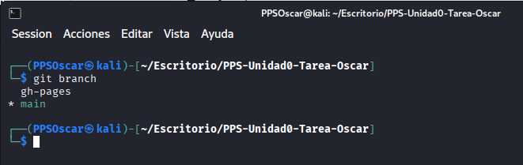

Publicación de la Documentación con GitHub Pages
En este apartado documento y recopilo todo el desarrollo del apartado GitHub Pages, explicando cómo he configurado la publicación automática de la documentación generada con MkDocs en la rama gh-pages.
1. Objetivo de GitHub Pages
Incluyo en este apartado:
- Publicación de la web generada por MkDocs.
- Utilización de la rama gh-pages (creada automáticamente por GitHub Actions).
- Permitir el acceso público a la documentación desde cualquier navegador.
- Mantener la web siempre actualizada de forma automática.
2. Confirmar que tengo la rama gh-pages
GitHub Pages funciona utilizando una rama especial llamada con el mismo nombre
Esta rama no se crea manualmente, sino que la genera automáticamente el workflow de GitHub Actions tras ejecutar mkdocs build (comentado en el apartado GitHub Actions, en la creación del archivo .yml).
Compruebo que la rama existe con el siguiente comando:
git fetch
git branch -a
Con git fetch obtengo en el repositorio local la información nueva.
En mi caso, se muestran ambas ramas y se indica con * que estoy situado en la rama main.

3. Configuración de GitHub Pages
Una vez que he comprobado que tengo la rama, configuro GitHub Pages desde mi repositorio de GitHub:
- Voy a Settings.
- Selecciono la opción Pages en el menú lateral.
-
En Source selecciono:
-
Branch:
gh-pages -
Folder:
/ (root) -
Guardo la configuración.
GitHub muestra la URL pública donde se publicará la documentación.

4. URL - github.io
Mi URL de acceso a la documentación es la siguiente:
https://ppsoscar.github.io/PPS-Unidad0-Tarea-Oscar/gitPages/
Es esta URL:
- ppsoscar = mi nombre de usuario de GitHub
- PPS-Unidad0-Tarea-Oscar = nombre del repositorio
Al abrir esa URL, mi web generada por MkDocs está disponible públicamente.

5. Verificación del funcionamiento
Para comprobar que GitHub Pages está sirviendo correctamente la documentación, ejecuto lo siguiente:
git checkout gh-pages
ls -la